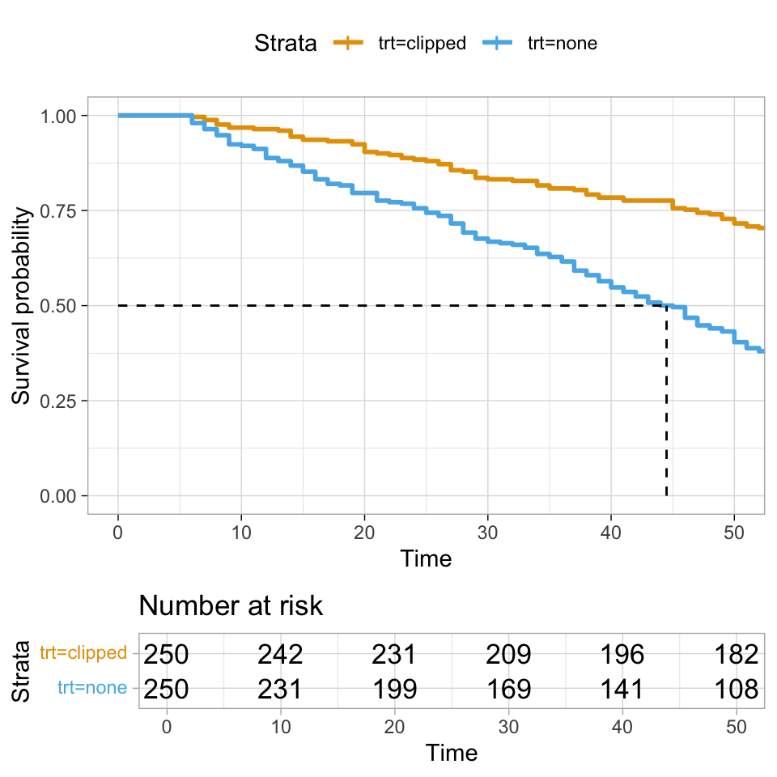

pacman::p_load(tidyverse, magrittr, conflicted, broom,
survminer, survival, parameters,
gtsummary, janitor, ranger)
conflict_prefer("select", "dplyr")
conflict_prefer("filter", "dplyr")
conflict_prefer("mutate", "dplyr")
cbbPalette <- c("#000000", "#E69F00", "#56B4E9", "#009E73",
"#F0E442", "#0072B2", "#D55E00", "#CC79A7")49 Überlebenszeitanalysen
Version vom August 10, 2023 um 21:44:28
In diesem Kapitel wollen wir uns nochmal mit der Zeit beschäftigen. Wir haben hier aber keine zeitlichen Messwiederholungen an dem gleichen Subjekt, Tier oder Pflanze vorliegen sondern wir schauen uns an, wie lange es dauert bis ein Ereignis eintritt. Deshalb nennen wir diese Analysen algemein Ereigniszeitanalysen. Häufig schauen wir uns aber die zeit an, die es braucht, bis das Ereignis “tot” für eine Beobachtung eintritt. Daher heißt das Kapitel auch Überlebenszeitanalysen (eng. survival analysis).
Überlebenszeitanalysen sind in den Humanwissenschaften und inbesondere in der Onkologie das Thema schlechthin. Wir beantworten hier die Fragen nach 3 Monatsmortalität und wollen wissen, wie viele patienten nach einer Behandlung mit einem Krebsmedikament nach drei Monaten noch leben. Du kanst dir vorstellen, dass es hier eine Menge an Annahmen und Modellen gibt. Wir wollen uns hier in dem Kapitel die Grundlagen anschauen. Da vieles in der Wissenschaft meist in englischer Sprache abläuft, kann ich hier sehr den das Buch von David und Mitchel (2012) empfehlen. Insbesondere die Einführungskapitel sind sehr gut geschrieben. Diese Detailtiefe wie bei David und Mitchel (2012) werde ich in diesem Abschnitt nicht erreichen. In den Agrarwissenschaften ist alles ein wenig anders als in den Humanwissenschaften.
Wie bereits erwähnt, konzentriert sich die Überlebensanalyse auf die erwartete Zeitdauer bis zum Auftreten eines Ereignisses von Interesse. Das Ereignis von Interesse ist dann meist ein Rückfall (eng. relapse) oder eben tot (eng. death). Es kann jedoch sein, dass das Ereignis bei einigen Personen innerhalb des Untersuchungszeitraums nicht beobachtet wird, was zu sogenannten zensierten Beobachtungen führt. Die Zensierung kann auf folgende Weise erfolgen:
- Ein Patient hat das interessierende Ereignis, wie Rückfall oder Tod, innerhalb des Studienzeitraums (noch) nicht erlebt;
- ein Patient wird während des Studienzeitraums nicht weiter beobachtet;
- bei einem Patienten tritt ein anderes Ereignis ein, das eine weitere Beobachtung unmöglich macht.
Diese Art der Zensierung, die als rechte Zensierung (eng. right censoring) bezeichnet wird, wird in der Überlebensanalyse in diesem Kapitel behandelt.
Am Ende muss ich dann nochmal auf die proportional hazards assumption hinweisen. Wir gehen davon aus, dass die Risiken im Zeitverlauf proportional sind, was bedeutet, dass die Wirkung eines Risikofaktors im Zeitverlauf konstant ist. Das ist jetzt etwas umständlich ausgedrückt, aber wir sagen, dass die Wahrscheinlichkeit zu Sterben über die ganze Studie immer konstant ist. Männer fangen also nicht nach \(t\) Tagen an zügiger zu Versterben als Frauen. Wenn wir eine Verletzung der proportional hazards assumption vorliegen haben, dann müssen wir nochmal tiefer in das Thema einsteigen.
Wir immer gibt es eine gute Auswahl an aktuellen Tutorien Survival Analysis Basics, die hier auch aufgegrifen werden. Ein umfangreicheres Tutorium in R findet sich unter Survival Analysis in R.
49.1 Genutzte R Pakete für das Kapitel
Wir wollen folgende R Pakete in diesem Kapitel nutzen.
Am Ende des Kapitels findest du nochmal den gesamten R Code in einem Rutsch zum selber durchführen oder aber kopieren.
49.2 Daten
Insgesamt schauen wir uns in diesem Kapitel dann drei Datensätze an. Einmal einen Datensatz der sehr simple ist und nochmal erklärt wie die Datenstruktur in R aussehen muss. Dafür nutzen wir das Überleben von Dodos. Dann einen Datensatz, der etwas komplizierter ist. Wir betrachten hier das Überleben von Fruchtfliegen. Den Abschluss bildet ein Datensatz zu einer klinischen Studie von Lungenkrebs. Der Datensatz wird viel in Beispielen genutzt, so dass ich den Datensatz auch hier nochmal vorstellen möchte.
49.2.1 Überleben von Dodos
Wir schauen uns hier das Überleben von Dodos mit oder ohne Schnabelstutzen an. Wir schauen dann an jedem Lebenstag, wie viele Dodos verstorben sind. Da wir es hier mit sehr schnell wachsenden Dodos zu tun haben, ist der Datensatz nicht so lang was die Zeit angeht. Wir beobachten nur die ersten 55 Lebenstage (eng. days of life, abk. dol) bevor die Dodos dann geschlachtet werden. In der Tabelle 49.1 sehen wir die rohen Daten, die wir in der Form nicht analysieren können. Wir müssen uns hier etwas strecken, damit das Format der Daten für die Überlebenszeitanalyse passt.
| trt | dol | count | death |
|---|---|---|---|
| none | 1 | 250 | 0 |
| none | 2 | 250 | 0 |
| none | 3 | 250 | 0 |
| none | 4 | 250 | 0 |
| none | 5 | 250 | 0 |
| none | 6 | 245 | 5 |
| … | … | … | … |
| clipped | 50 | 179 | 3 |
| clipped | 51 | 177 | 2 |
| clipped | 52 | 176 | 1 |
| clipped | 53 | 173 | 3 |
| clipped | 54 | 170 | 3 |
| clipped | 55 | 163 | 7 |
Unsere Daten zu den Dodos beinhalten die folgenden Spalten mit den entsprechenden Bedeutungen.
-
trt, die Behandlung der Schnäbel mit
noneundclipped - dol, der day of life also der Lebenstag der Dodos
- count, die Anzahl an lebenden Dodos an dem entprechenden day of life
- death, die Anzahl an tot aufgefundenen Dodos an dem entpsrechenden day of life
Wir haben somit \(n = 500\) beobachtete Dodos mit jeweils 250 für jede der beiden Schnabelbehandlungen. Jetzt brauchen wir aber wie immer einen Datansatz in dem jede Zeile einen beobachteten Dodo entspricht. In der Tabelle 49.2 sehen wir welche Art von Tabelle wir bauen müssen.
| dodo_id | trt | dol | death |
|---|---|---|---|
| 1 | none | 6 | 1 |
| 2 | none | 6 | 1 |
| 3 | none | 7 | 1 |
| … | … | … | … |
| 249 | none | 55 | 0 |
| 250 | none | 55 | 0 |
| 251 | clipped | 6 | 1 |
| … | … | … | … |
| 500 | clipped | 55 | 0 |
Fangen wir also mit der Information an, die wir haben. Wir wissen wie viele Dodos jeweils zu einem bestimmten Lebenstag gestorben sind. Daher können wir anhand der Spalte death die Anzahl an Zeilen entsprechend vervielfältigen. Sind an einem Lebenstag drei Dodos gestorben, dann brauchen wir dreimal eine Zeile mit der Information des Lebenstages und dass an diesem Tag ein Dodo gestorben ist. Wir nutzen dazu die Funktion uncount(). Dann erschaffen wir noch eine Spalte death in der einfach immer eine 1 steht, da ja an diesem Lebenstag ein Dodo verstorben ist.
Im nächsten Schritt müssen wir die lebenden Dodos separat für jede Behandlung ergänzen. Daher spalten wir uns die Daten in eine Liste auf und ergänzen dann die Informationen zu den fehlenden, lebenden Dodos. Alle lebenden Dodos haben die maximale Lebenszeit, sind nicht gestorben und damit bleibt die Anzahl auch konstant.
Wenn wir die Informationen zu toten und den noch lebenden Dodos gebaut haben, können wir uns dann einen finalen Datensatz zusammenkleben.
dodo_tbl <- bind_rows(death_tbl, alive_tbl)In der Tabelle 49.3 sehen wir den finalen Dododatensatz, den wir uns aus den Informationen zusammengebaut haben. Wir haben hier einmal die Struktur eines Überlebenszeitdatensatzes gelernt und das wir manchmal uns ganz schön strecken müssen um die Daten dann auch gut umzubauen. Wir werden am Ende nur die Informationen in der Spalte dol, death und trt nutzen.
| trt | dol | count | death |
|---|---|---|---|
| none | 6 | 245 | 1 |
| none | 6 | 245 | 1 |
| none | 6 | 245 | 1 |
| none | 6 | 245 | 1 |
| none | 6 | 245 | 1 |
| none | 7 | 241 | 1 |
| … | … | … | … |
| none | 55 | 85 | 0 |
| none | 55 | 85 | 0 |
| none | 55 | 85 | 0 |
| none | 55 | 85 | 0 |
| none | 55 | 85 | 0 |
| none | 55 | 85 | 0 |
49.2.2 Überleben von Fruchtfliegen
Im folgenden Beispiel in Tabelle 49.4 beobachten wir Fruchtfliegen bis fast alle Insekten verstorben sind. Das ist natürlich das andere Extrem zu den Dododatensatz. Wir testen hier ein Insektizid und am Ende haben wir dann keine lebenden Fruchtfliegen mehr. Das würdest du mit Dodos oder Schweinen nicht machen, denn so lange möchtest du die Tiere ja auch nicht beobachten, bis alle gestorben sind. Bei Fruchtfliegen dauert es eben nicht so lange bis alle Fliegen verstorben sind.
| trt | time | status | sex | weight | weight_bin |
|---|---|---|---|---|---|
| fruitflyEx | 2 | 1 | male | 8.13 | low |
| fruitflyEx | 2 | 1 | male | 7.75 | low |
| fruitflyEx | 3 | 1 | male | 9.86 | low |
| fruitflyEx | 3 | 1 | male | 6.36 | low |
| … | … | … | … | … | … |
| control | 23 | 1 | female | 21.02 | high |
| control | 24 | 1 | female | 16.45 | high |
| control | 25 | 1 | female | 14.17 | low |
| control | 26 | 1 | female | 17.73 | high |
Unsere Daten zu den Fruchtfliegen beinhalten die folgenden Spalten mit den entsprechenden Bedeutungen.
-
trt, als die Behandlung mit den beiden Leveln
fruitflyExundcontrol - time, den Zeitpunkt des Todes der entsprechenden Fruchfliege
-
status, den Status der Fruchtfliege zu dem Zeitpunkt
time. Hier meist1und damit tot, aber ein paar Fruchtfliegen sind bei der Überprüfung entkommen und haben dann eine0. - sex, das Geschlecht der entsprechenden Fruchtfliege
- weight, das Gewicht der entsprechenden Fruchtfliege in \(\mu g\).
- weight_bin das Gewicht der entsprechenden Fruchtfliege aufgeteilt in zwei Gruppen nach dem Cutpoint von \(15 \mu g\).
49.2.3 Überleben von Lungenkrebs
Zum Abschluss möchte ich noch den Datensatz lung in der Tabelle 49.5 aus dem R Paket survival vorstellen. Das hat vor allem den Grund, dass es sich hier um einen klassischen Datensatz zur Überlebenszeitanalyse handelt und ich auch dieses Teilgebiet einmal mit abdecken möchte. Wie schon weiter oben gesagt, Überlebenszeitanalysen kommen eher in dem Humanbereich vor. Darüber hinaus bedienen sich fast alle anderen Tutorien im Internet diesem Datensatz, so dass du dann einfacher die englischen Texte nachvollziehen kannst.
| inst | time | status | age | sex | ph.ecog | ph.karno | pat.karno | meal.cal | wt.loss |
|---|---|---|---|---|---|---|---|---|---|
| 3 | 306 | 2 | 74 | 1 | 1 | 90 | 100 | 1175 | NA |
| 3 | 455 | 2 | 68 | 1 | 0 | 90 | 90 | 1225 | 15 |
| 3 | 1010 | 1 | 56 | 1 | 0 | 90 | 90 | NA | 15 |
| 5 | 210 | 2 | 57 | 1 | 1 | 90 | 60 | 1150 | 11 |
| … | … | … | … | … | … | … | … | … | … |
| 13 | 191 | 1 | 39 | 1 | 0 | 90 | 90 | 2350 | -5 |
| 32 | 105 | 1 | 75 | 2 | 2 | 60 | 70 | 1025 | 5 |
| 6 | 174 | 1 | 66 | 1 | 1 | 90 | 100 | 1075 | 1 |
| 22 | 177 | 1 | 58 | 2 | 1 | 80 | 90 | 1060 | 0 |
- inst Institution code
- time Survival time in days
- status censoring status 1=censored, 2=dead
- age Age in years
- sex Male=1 Female=2
- ph.ecog ECOG performance score (0=good 5=dead)
- ph.karno Karnofsky performance score (bad=0-good=100) rated by physician
- pat.karno Karnofsky performance score as rated by patient
- meal.cal Calories consumed at meals
- wt.loss Weight loss in last six months
Trotz seiner Prominenz hat der Datensatz einen Fehler. Wir wollen den Status nicht auf 1/2 kodiert haben sondern auf 0/1. Ebenso wollen wir die Spalte inst nicht, da wir die Informationen nicht brauchen. Dann sind noch die Namen der Spalten hässlich, so dass wir da die Funktion clean_names() nutzen um einmal aufzuräumen.
lung_tbl <- lung %>%
as_tibble() %>%
mutate(status = recode(status, `1` = 0, `2` = 1)) %>%
clean_names() %>%
select(-inst)
49.3 Die Surv() Funktion
Als die Besonderheit bei der Bearbeitung von Überlebenszeitanalysen ist die Andersartigkeit von unserem \(y\). Wir haben ja zwei Spalten, die das Outcome beschreiben. Zum einen die Dauer oder Zeit bis zum Ereignis und dann die Spalte, die beschreibt, ob das Ereignis überhaupt eingetreten ist. In R lösen wir dieses Problem in dem wir zwei Spalten in dem Objekt Surv() zusammenführen. Alle Analysen in R gehen nur mit dem Surv() Objekt.
Surv(time, death)In dem Objekt Surv() haben wir erst die Spalte für die Zeit und dann die Spalte für das Ereignis. Für den Dododatensatz haben wir dann folgende Zusammenhänge.
-
dolin den Datendodo_tblist gleichtimein demSurv()Objekt -
deathin den Datendodo_tblist gleichdeathin demSurv()Objekt
Bei dem Fruchfliegendatensatz sieht die Sachlage dann so aus.
-
timein den Datenfruitfly_tblist gleichtimein demSurv()Objekt -
statusin den Datenfruitfly_tblist gleichdeathin demSurv()Objekt
Für den Lungenkrebsdatensatz haben wir dann folgende Zuordnung.
-
timein den Datenlung_tblist gleichtimein demSurv()Objekt -
statusin den Datenlung_tblist gleichdeathin demSurv()Objekt
Im Folgenden haben wir dann immer auf der linken Seite vom ~ ein Surv() Objekt stehen. Daran muss man sich immer etwas gewöhnen, sonst kommt sowas ja nicht in den Analysen vor.
49.4 Visualisierung über Kaplan Meier Kurven
Nur kategoriale Variablen in einer Kaplan Meier Kurve
Wir können nur kategoriale Variablen in einer Kaplan Meier Kurve darstellen. Das heißt, wir müssen alle unsere \(x\), die kontinuierlich sind in eine kategoriale Variable umwandeln.
Wir können nur kategoriale Variablen in einer Kaplan Meier Kurve darstellen. Das heißt, wir müssen alle unser \(X\), die wir haben, in Variablen mit Kategorien umwandeln. Wenn du also in deinen Daten eine Spalte für das Gewicht in kg hast, dann musst du dir überlegen, wie du diese Werte in Kategorien änderst. Eine beliebte Variante ist, dass du zwei Gruppen bildest. Einmal die Patienten, die schwerer sind als der Median des Körpergewichts und einmal eine Gruppe für die Patienten, die leichter sind als der Median des Körpergewichts. Die Kategorisierung von Variablen ist faktisch ein eigenes Problem und lässt sich ohne den biologischen Hintergrund eigentlich nicht sauber durchführen. Daher werden in klinischen Studien oder Experimenten die Daten gleich in Kategorien erhoben. Daher gibt es vorab klare Kriterien in welcher Gewichtsklasse oder Altersklasse ein Patient landen wird. Das Gleiche gilt dann auch für andere kontinuierlichen Variablen.
Ein häufiger Fehler bei der Betrachtung der Kaplan Meier Kurve ist diese als die simple lineare Regression der Überlebenszeitanalyse anzusehen. Wir können zwar mit der Kaplan Meier Kurve immer nur ein \(X\) betrachten aber der Algorithmus basiert auf dem \(\mathcal{X}^2\)-Test und hat nichts mit einer Regression zu tun. Daher kann es sein, dass du unterschiedliche Ergebnisse in der Visualisierung mit Kaplan Meier Kurven und dann der Analyse mit dem Cox Proportional-Hazards Modell erhälst.
In R nutzen wir das Paket survminer und die Funktion ggsurvplot() für die Visualisierung der Kaplan Meier Kurven.
49.4.1 Dodos
Um eine Kaplan Meier Kurve zeichnen zu können, brauchen wie als erstes die Funktion survfit(). Mit der Funktion survfit() können wir zum einen das mediane Überleben berechnen und alle Informationen erhalten, die wir brauchen um die Kaplan Meier Kurve zu plotten.
trt_fit <- survfit(Surv(dol, death) ~ trt, data = dodo_tbl)Wir können einmal das Objekt trt_fit uns anschauen.
trt_fitCall: survfit(formula = Surv(dol, death) ~ trt, data = dodo_tbl)
n events median 0.95LCL 0.95UCL
trt=clipped 250 87 NA NA NA
trt=none 250 165 44.5 40 49Zum einen fallen uns die NA’s in der Wiedergabe des Fits der Überlebenszeit auf. Wenn wir uns die Abbildung 49.1 einmal anschauen, dann wird das Problem etwas klarer. Wir sehen nämlich, dass wir bei den geklippten Tieren gar nicht so weit runter kommen mit den toten Tieren, dass wir das mediane Überleben berechnen könnten. Nicht immer können wir auch alle statistischen Methoden auf alle Fragestellungen anwenden. Insbesondere wenn nicht genug Ereignisse wie in diesem Beispiel auftreten.
ggsurvplot(trt_fit,
data = dodo_tbl,
risk.table = TRUE,
surv.median.line = "hv",
ggtheme = theme_light(),
palette = cbbPalette[2:8])
49.4.2 Fruchtfliegen
Gehen wir einen Schritt weiter und schauen uns das Modell für die Fruchtfliegen an. Hier haben wir eine Behandlung mit zwei Leveln also Gruppen vorliegen. Wir nutzen wieder die Funktion survfit() um einaml unser Modell der Überlebenszeiten zu fitten.
trt_fit <- survfit(Surv(time, status) ~ trt, data = fruitfly_tbl)Wir erhalten dann folgende Ausgabe des Modells.
trt_fitCall: survfit(formula = Surv(time, status) ~ trt, data = fruitfly_tbl)
n events median 0.95LCL 0.95UCL
trt=fruitflyEx 50 44 12 10 14
trt=control 50 49 15 13 17In der Abbildung 49.2 sehen wir die Visualisierung des Modells als Kaplan Meier Kurve. In diesem Experiment sterben fast alle Fruchtfliegen im Laufe der Untersuchung. Wir können also einfach das mediane Überleben für beide Gruppen berechnen.
ggsurvplot(trt_fit,
data = fruitfly_tbl,
risk.table = TRUE,
surv.median.line = "hv",
ggtheme = theme_light(),
palette = cbbPalette[2:8])Nachdem wir die Kaplan Meier Kurven einmal für die Behandlung durchgeführt haben, können wir uns auch anschauen, ob das Überleben der Fruchtfliegen etwas mit dem Gewicht der Fruchtfliegen zu tun hat. Hier können wir nicht auf das Gewicht in der Spalte weight zurückgreifen sondern müssen die Variable weight_bin mit zwei Klassen nehmen.
weight_fit <- survfit(Surv(time, status) ~ weight_bin, data = fruitfly_tbl)Wir erhalten dann die Kaplan Meier Kurven in der Abbildung 49.3 zurück. Hier ist es wichtig sich nochmal klar zu machen, dass wir eben nur kategoriale Variablen in einer Kaplan Meier Kurve darstellen können.
ggsurvplot(weight_fit,
data = fruitfly_tbl,
risk.table = TRUE,
surv.median.line = "hv",
ggtheme = theme_light(),
palette = cbbPalette[2:8])49.4.3 Lungenkrebs
Als letztes Beispiel wollen wir uns nochmal den Datensatz lung_tbl anschauen. Zwar ist Lungenkrebs jetzt nichts was Tiere und Pflanzen als eine wichtige Erkrankung haben können, aber der Datensatz wird viel als Beispiel genutzt, so dass ich den Datensatz hier auch nochmal vorstellen möchte. Auch sind teilweise gewisse Schritte von Interesse, die eventuell auch in deiner Tier- oder Mäusestudie von Interesse sein könnten.
Beginnen wir einmal mit dem Nullmodell. Das heißt, wir schauen uns den Verlauf des gesamten Überlebens einmal an. Wir wollen wissen, wie das mediane Überleben in unseren Daten ausschaut ohne das wir uns irgendeien Variable anschauen.
null_fit <- survfit(Surv(time, status) ~ 1, data = lung_tbl)Im Folgenden einmal die Ausgabe des Fits.
null_fitCall: survfit(formula = Surv(time, status) ~ 1, data = lung_tbl)
n events median 0.95LCL 0.95UCL
[1,] 228 165 310 285 363Wir sehen, dass wir ein medianes Überleben von \(310\) Tagen haben. Es gibt insgesamt \(165\) Ereignisse zu beobachten von insgesamt \(228\) in die Studie eingeschlossenen Patienten. Wir können uns auch für bestimmte Zeitpunkte das Überleben wiedergeben lassen. Wir schauen uns hier einmal das Überleben nach einem Jahr bzw. \(365.25\) Tagen an.
null_fit %>%
summary(times = 365.25)Call: survfit(formula = Surv(time, status) ~ 1, data = lung_tbl)
time n.risk n.event survival std.err lower 95% CI upper 95% CI
365 65 121 0.409 0.0358 0.345 0.486Hier sehen wir, dass \(40.9\%\) das eine Jahr überlebt haben. Achtung, immer auf die Kodierung achten. Nur wenn du death = 1 kodiert hast, kannst du hier die Ausgaben der Funktionen in diesem Sinne interpretieren. Gerne kannst du hier auch das 3 Monatsüberleben bestimmen. Das kommt ganz darauf an, was deine Fragestellung ist. In der Abbildung 49.4 siehst du nochmal die Kaplan Meyer Kurve für das Nullmodell.
ggsurvplot(null_fit,
data = lung_tbl,
risk.table = TRUE,
surv.median.line = "hv",
ggtheme = theme_light(),
palette = cbbPalette[2])Schauen wir uns auch einmal Kaplan Meier Kurven für die Variable ph_ecog an. Hier haben wir das Problem, dass die Kategorie 3 kaum mit Patienten belegt ist. Daher filtern wir die Kategorie 3 einmal aus unseren Daten raus.
lung_tbl %<>%
filter(ph_ecog != 3)Wir können dann das Modell der Überlebenszeit einmal fitten.
lung_fit <- survfit(Surv(time, status) ~ ph_ecog, data = lung_tbl)In der Abbildung 49.5 sehen wir dann die Kaplan Meier Kurve für die Variable ph_ecog. Du kannst hier schön sehen, dass wenn wir mehrere Kategorien in der Variable haben auch mehrere Graphen erhalten. Wichtig hierbei ist nochmal, dass sich die Graphen nicht überschneiden oder aber in der Mitte kreuzen. Dann haben wir ein Problem und könnten die Daten nicht auswerten.
Konkret geht es hier um die proportional hazards assumption, die besagt, dass Überlebenszeitkurven für verschiedene Gruppen Hazardfunktionen haben müssen, die über die Zeit \(t\) proportional sind. Daher dürfen sich die Kurven nicht schneiden.
ggsurvplot(lung_fit,
data = lung_tbl,
risk.table = TRUE,
surv.median.line = "hv",
ggtheme = theme_light(),
palette = cbbPalette[2:8])
ph_ecog des Lungenkrebsdatensatzes.Ganz zum Schluss dann noch die Frage, ob wir einen signifikanten Unterschied zwischen den beiden Kurven sehen. Dafür können wir dann die Funktion survdiff() nutzen. Die Funktion survdiff() gibt uns dann einen p-Wert wieder, ob sich die Kurven unterscheiden. Da es sich hier um einen globalen p-Wert handelt, erfahren wir nur, dass sich die Kurven unterscheiden, aber nicht welche. Dafür müssten wir dann die Kurven paarweise getrennt betrachten. Eigentlich ist nur der p-Wert von Interesse, die anderen Informationen haben eigentlich keinen biologischen Mehrwert.
survdiff(Surv(time, status) ~ ph_ecog, data = lung_tbl)Call:
survdiff(formula = Surv(time, status) ~ ph_ecog, data = lung_tbl)
N Observed Expected (O-E)^2/E (O-E)^2/V
ph_ecog=0 63 37 53.9 5.3014 8.0181
ph_ecog=1 113 82 83.1 0.0144 0.0295
ph_ecog=2 50 44 26.0 12.4571 14.9754
Chisq= 18 on 2 degrees of freedom, p= 1e-04 49.5 Cox Proportional-Hazards Modell
Wenn die Kaplan Meyer Kurven sowas wie die simple lineare Regression sind, dann ist das Cox Proportional-Hazards Modell die multiple Regression in den Ereigniszeitanalysen. Damit haben wir natürlich wieder einen statistischen Engel überfahren. Das Cox Proportional-Hazards Modell ist natürlich etwas anders und lässt sich so einfach auch nicht mit einer multiplen Regression vergleichen, aber die Anwendung ist ähnlich. Wo wir bei den Kaplan Meier Kurven nur ein \(X\) in das Modell nehmen können, so können wir beim Cox Proportional-Hazards Modell beliebig viele \(X\) mit ins Modell nehmen. Theoretisch müssen die Variablen in einem Cox Proportional-Hazards Modell auch nicht mehr kategorial sein. Da wir aber meist alles schon in Kategorien visualisiert haben, bleiben wir dann meist im Cox Proportional-Hazards Modell auch bei den Kategorien in den Variablen.
Auch im Fall des Cox Proportional-Hazards Modells kann ich hier nur eine Übersicht geben. Es findet sich natürlich auch ein Tutorium zum Cox Proportional-Hazards Model Tools. Für das Überprüfen der Modellannahmen empfiehlt sich auch das Tutorium zu Cox Model Assumptions.
In R nutzen wir die Funktion coxph() um ein Cox Proportional-Hazards Modell anzupassen. Die Anwendung ist eigentlich ziemlich einfach und lässt sich schnell durchführen.
fit_1 <- coxph(Surv(time, status) ~ trt + sex + weight, data = fruitfly_tbl)
fit_1 %>%
model_parameters(exponentiate = TRUE)Parameter | Coefficient | SE | 95% CI | z | p
------------------------------------------------------------------
trt [control] | 0.24 | 0.09 | [0.12, 0.49] | -4.00 | < .001
sex [female] | 0.14 | 0.04 | [0.09, 0.24] | -7.32 | < .001
weight | 1.02 | 0.04 | [0.95, 1.10] | 0.60 | 0.549 Als Koeffizienten erhalten wir das Hazard ratio (abk. HR) wieder. Wie schon bei der logistischen Regression müssen wir auch hier die Koeffizienten exponieren, damit wir die Link-scale verlassen. Wir können das HR wie ein Risk ratio (abk. RR) interpretieren. Es handelt sich also mehr um eine Sterbewahrscheinlichkeit. Ganz richtig ist die Interpretation nicht, da wir hier noch eine Zeitkomponente mit drin haben, aber für den umgangssprachlichen Gebrauch reicht die Interpretation.
Wenn wir ein \(HR > 1\) vorliegen haben, so steigert die Variable das Risiko zu sterben. Daher haben wir eine protektive Variable vorliegen, wenn dass \(HR < 1\) ist. Häufig wollen wir ein \(HR < 0.8\) oder \(HR < 0.85\) haben, wenn wir von einem relevanten Effekt sprechen wollen. Sonst reicht uns die Risikoreduktion nicht, um wirklich diese Variable zukünftig zu berücksichtigen. Aber wie immer hängt die Schwelle sehr von deiner Fragestellung ab.
Ich habe nochmal als Vergleich die Variable weight in das Modell genommen und damit den fit_1 angepasst sowie die Variable weight in zwei Gruppen zu weight_bin aufgeteilt. Hier siehst du sehr schön, dass der Effekt der Dichotomisierung nicht zu unterschätzen ist. Im fit_1 ist die kontinuierliche Variable weight eine Risikovariable, daher wir erwarten mehr tote Fruchtfliegen mit einem steigenden Gewicht. In dem fit_2 haben wir die dichotomisierte Variable weight_bin vorliegen und schon haben wir eine protektive Variable. Wenn das Gewicht steigt, dann sterben weniger Fruchtfliegen. Zwar ist in beiden Fällen die Variable nicht signifikant, aber du solltest eine Dichotomisierung immer überprüfen.
fit_2 <- coxph(Surv(time, status) ~ trt + sex + weight_bin, data = fruitfly_tbl)
fit_2 %>%
model_parameters(exponentiate = TRUE)Parameter | Coefficient | SE | 95% CI | z | p
---------------------------------------------------------------------
trt [control] | 0.20 | 0.07 | [0.10, 0.39] | -4.65 | < .001
sex [female] | 0.14 | 0.04 | [0.08, 0.23] | -7.50 | < .001
weight bin [low] | 0.62 | 0.20 | [0.33, 1.16] | -1.48 | 0.138 Nachdem wir ein Cox Proportional-Hazards Modell angepasst haben, wollen wir nochmal überprüfen, ob die Modellannahmen auch passen. Insbesondere müssen wir überprüfen, ob das Risiko über die ganze Laufzeit der Studie gleich bleibt oder sich ändert. Wir testen also die proportional hazards assumption. Dafür können wir in R die Funktion cox.zph() nutzen.
test_ph <- cox.zph(fit_2)
test_ph chisq df p
trt 0.000866 1 0.977
sex 3.400374 1 0.065
weight_bin 0.185700 1 0.667
GLOBAL 3.971563 3 0.265Wir lesen die Ausgabe von unten nach oben. Zuerst könne wir die proportional hazards assumption nicht ablehnen. Unser globaler p-Wert ist mit \(0.265\) größer als das Signifikanzniveau \(\alpha\) gleich \(5\%\). Betrachten wir die einzelnen Variablen, dann können wir auch hier die proportional hazards assumption nicht ablehnen. In der Abbildung 49.6 ist der Test auf die proportional hazards assumption nochmal visualisiert. Wenn die durchgezogene Linie innerhalb der gestrichelten Linien, als Bereich von \(\pm 2\) Standardfehlern, bleibt, dann ist soweit alles in Orndung. Bei einem Verstoß gegen die proportional hazards assumption kannst du folgende Maßnahmen ausprobieren:
- Hinzufügen von einer Kovariate*Zeit-Interaktion in das Cox Proportional-Hazards Modell
- Stratifizierung der Daten nach der Kovariaten, die der proportional hazards assumption nicht folgt
Auch hier musst du dann mal tiefer in die Materie einsteigen und einmal in den verlinkten Tutorien schauen, ob da was passendes für dein spezifisches Problem vorliegt.
ggcoxzph(test_ph)
49.6 Logistische Regression
Was schon wieder die logistische Regression? Ja, schon wieder die logistische Regression. Wenn du dich nicht mit der Ereigniszeitanalyse rumschlagen willst oder denkst, dass die Ereigniszeitanalyse nicht passt, dann hast du immer noch die Möglichkeit eine logistische Regression zu rechnen. Dafür müssen wir dann nur ein wenig an den Daten rumbasteln. Wir müssen dann nämlich eine neue Variable erschaffen. Wir schauen einfach zu einem Zeitpunkt \(t\), ob die Beobachtung noch lebt. Dadurch bauen wir uns dann eine Spalte mit \(0/1\) Werten. Dann kann es auch schon losgehen mit der logistischen Regression.
Tja, All your base are belong to us kann man da nur sagen…
Im ersten Schritt bauen wir uns eine neue Variable died_3_m für den Lingenkrebsdatensatz. Da in einer logistsichen Regression das Schlechte immer 1 ist, fragen wir, wer nach 90 Tagen verstorben ist. Also eine Lebenszeit unter 90 Tagen hatte. Diese Beobachtungen kriegen dann eine 1 und die anderen Beobachtungen eine 0.
lung_logreg_tbl <- lung_tbl %>%
mutate(died_3_m = ifelse(time < 90, 1, 0))Nachdem wir uns recht schnell eine neue Variable gebaut haben, können wir dann einfach die logistische Regression rechnen. Bitte beachte, dass du die Effekte nur auf der log-Scale wiedergegeben kriegst, du musst dann die Ausgabe noch exponieren. Das machen wir hier in der Funktion model_parameters() gleich mit.
glm(died_3_m ~ age + sex + ph_ecog, data = lung_logreg_tbl, family = binomial) %>%
model_parameters(exponentiate = TRUE)Parameter | Odds Ratio | SE | 95% CI | z | p
------------------------------------------------------------------
(Intercept) | 4.94e-03 | 9.59e-03 | [0.00, 0.18] | -2.74 | 0.006
age | 1.06 | 0.03 | [1.01, 1.13] | 2.29 | 0.022
sex | 0.45 | 0.23 | [0.16, 1.14] | -1.59 | 0.111
ph ecog | 1.34 | 0.41 | [0.74, 2.47] | 0.96 | 0.335Was sind die Unterschiede? Eine logistische Regression liefert Odds Ratios, also ein Chancenverhältnis. Aus einer Ereigniszeitanalyse erhalten wir Hazard Ratios, was eher ein Risk Ratio ist und somit eine Wahrscheinlichkeit. Deshalb lassen sich die Ergebnisse an der Stelle nur bedingt vergleichen. Im Falle der logistischen Regression fallen auch Zensierungen weg. Wir betrachten eben nur einen einzigen Zeitpunkt. In der Ereigniszeitanalyse betrachten wir hingegen den gesamten Verlauf. Wir immer musst du überlegen, was ist deine Fragestellung und was möchtest du berichten. Wenn es dir wirklich nur um den Zeitpunkt \(t\) geht und dir die Progression dahin oder danach egal ist, dann mag die logistische Regression auch eine Möglichkeit der Auswertung sein.
Referenzen
David, G Kleinbaum, und Klein Mitchel. 2012. Survival analysis: a Self-Learning text. Spinger.